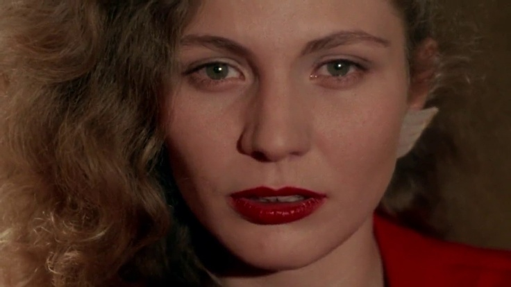

Há filmes que vemos e há filmes que vivemos. “Um hino à vida” talvez seja a melhor forma de descrever Wings of Desire de Wim Wenders (1981).
O filme acompanha dois anjos, Damiel (Bruno Ganz) e Cassiel (Otto Sander), a deambular por uma Berlim dividida nos finais da Guerra Fria, a manifestação psicogeográfica de uma fratura humana que parece eterna. Os anjos limitam-se a observar a vida das pessoas e a oferecer esperança silenciosa aos que dela necessitam. Nesta premissa, a narrativa foca-se em Damiel, que se apaixona pela trapezista Marion (Solveig Dommartin) e começa a colocar em questão a sua própria imunidade. Vamos por partes.
O filme começa do ponto de vista de um anjo. A câmara voa sobre Berlim, atravessa paredes, entra nas casas e escuta os monólogos interiores dos habitantes. Wenders coloca-nos exatamente no mesmo estatuto dos anjos: somos meros observadores invisíveis. Nas primeiras cenas, quando a câmara plana sobre um avião em voo e desce suavemente até ao interior dos apartamentos berlinenses, ouvimos o murmúrio coletivo de uma cidade inteira. Uma mulher a pensar na solidão, um homem a questionar o sentido do seu trabalho, uma mãe a acalentar o filho. A câmara não julga nem interfere; limita-se a flutuar entre os pensamentos, estabelecendo que a nossa perceção, enquanto espetadores, é idêntica à omnipresença de Damiel e Cassiel.
A certo ponto, estamos em cima da Igreja Memorial do Kaiser Wilhelm, a ver do ponto de vista angelical, quando uma criança lá em baixo, ao atravessar a rua, olha para cima e claramente percebe que há algo no topo da torre. Esta é uma das imagens mais marcantes do filme. A igreja Kaiser Wilhelm é um monumento ao trauma da Segunda Guerra Mundial, tendo sido parcialmente destruída num bombardeamento em 1943 e mantida em ruínas para servir de lembrança constante das atrocidades do conflito. O filme mostra que toda a cidade se encontra nesse estado de “cicatriz aberta”. Edifícios históricos e praças outrora fervilhantes, como a Potsdamer Platz, estão desfigurados. A cidade encontra-se cortada ao meio pelo Muro, e a iconografia nazi que dantes aterrorizou o mundo é agora mercantilizada e encenada pela indústria do cinema no set onde Peter Falk grava o seu filme.
No entanto, apesar desta condição psicogeográfica, as crianças de Berlim são as únicas capazes de ver os anjos e, por conseguinte, a esperança.
Wings of Desire , originalmente entitulado Céu sobre Berlim , contrasta repetidamente a forma de estar das crianças com a dos adultos. Numa cena no elétrico, enquanto os adultos viajam cabisbaixos, consumidos por ansiedades financeiras e memórias dolorosas, uma criança fixa o olhar num ponto vazio do vagão e sorri. É ali que Damiel está sentado. Nesta narrativa, as crianças habitam um presente puro e intuitivo onde o invisível ainda é plausível. No caso dos anjos, Cassiel encarna a melancolia dos adultos, esmagado pela repetição da história humana.
“Cassiel: Twenty years ago today a Soviet jet fighter crashed into the lake at Spandau. Fifty years ago -… Damiel: The Olympic Games! Cassiel: A Frenchman flew over the city in a hot air balloon 20 years ago. Damiel: Like those refugees recently. Cassiel: And today on the Lilienthaler Chaussee, a man slowed down and looked over his shoulder into space. And a man who wanted to end it all today put a different collector's stamp on each farewell letter. ”
Em oposição, Damiel demonstra um deslumbre quase ingénuo pelas coisas mais efémeras e sensoriais da vida:
“ No, I don't have to beget a child or plant a tree but it would be rather nice coming home after a long day to feed the cat, like Philip Marlowe, to have a fever and blackended fingers from the newspaper, to be excited not only by the mind but, at last, by a meal, by the line of a neck, by an ear. To lie! Through one's teeth. As you're walking, to feel your bones moving along. At last to guess, instead of always knowing. To be able to say "ah" and "oh" and "hey" instead of "yea" and "amen. ”
Esta fixação pela perspetiva infantil é a estrutura de toda a obra, pontuada ao longo do filme pelos versos do poema “ Song of Childhood ” de Peter Handke:
“_When the child was a child, it didn’t know that it was a child, everything was soulful, and all souls were one. … _When the child was a child, It was the time for these questions: Why am I me, and why not you? Why am I here, and why not there? When did time begin, and where does space end? Is life under the sun not just a dream? Is what I see and hear and smell not just an illusion of a world before the world? Given the facts of evil and people. does evil really exist? How can it be that I, who I am, didn’t exist before I came to be, and that, someday, I, who I am, will no longer be who I am? …”
Ao regressar continuamente a este poema recitado em voice-over , Wenders lembra-nos de que a tragédia da vida adulta é a perda do deslumbramento e espontaneidade infantil.
Na Biblioteca Estatal de Berlim (Staatsbibliothek), vemos que a cidade está repleta de anjos, um indicador visual da dimensão da dor e da falta de esperança da população berlinense. Ao acompanhar Damiel pelos corredores, os outros anjos acenam com a cabeça e olham diretamente para a câmara num olhar pactuante: nós estamos no mesmo plano que eles. Damiel pega numa caneta e manuseia-a, sabendo perfeitamente que nunca poderá escrever nada com ela. De que serve a existência eterna se não podemos deixar uma marca nela? Damiel continua a deambular até dar a um circo itinerante prestes a fechar. É lá que encontra Marion, uma trapezista vestida com um fato circense de asas de anjo, a ensaiar o seu número no trapézio:
“Treinador: Marion, not like that! Mon dieu! What's that supposed to be? Less effort, more swing! What are you doing? Don't dangle - fly! You're an angel! Marion: For heaven's sake! Damn it! I can't fly with these things. Treinador: Yes, you can. It's easier with wings than without. Marion: Well, not with these chicken feathers! ”
Durante este breve momento, o filme, até aqui monocromático, ganha subitamente uma explosão de cor. O que terá atraído Damiel? As asas falsas de anjo? O perigo inerente à performance sem rede de Marion? A hipótese de morrer pela sua arte? Uma coisa é clara: Marion procura a ascensão espiritual através da performance. Enquanto os anjos reais e invisíveis (como Damiel e Cassiel) são penados ( ha ha pena ) pela leveza da eternidade e anseiam por se ancorar na realidade física, Marion utiliza "penas de galinha" para simular o voo, na busca da sua própria leveza espiritual por meio da arte. A sua única vontade é ser trapezista, mas o circo vai fechar por falência. Ainda assim, ela não se deixa esmagar: tem todo o mundo e todo o tempo pela frente.
A arte aparenta ser a única ferramenta de sobrevivência psíquica e espiritual de uma população berlinense enclausurada e traumatizada. Numa cidade dividida, onde as fronteiras políticas e os escombros da II Guerra Mundial sufocam a esperança quotidiana, a expressão artística funciona como um meio de sublimação. As acrobacias de Marion que desafiam a morte, o pós-punk nos clubes noturnos que canaliza a angústia da juventude e as pinturas transgressoras que cobrem o Muro de Berlim e transformam uma barreira de betão e opressão num tela viva de resistência e identidade humana. A arte é a forma como os berlinenses transcendem o seu confinamento. As above, so below, já que o próprio filme assume exatamente essa missão. Wings of Desire opera como um ato de redenção e consolo artístico. Tal como os anjos pousam a mão no ombro dos berlinenses desesperados para lhes dar um instante de alívio invisível, esta obra faz o mesmo com a cidade e com o espectador.
Depois de uma conversa decisiva com Peter Falk, ele próprio um ex-anjo que abdicou da imortalidade para viver a experiência humana, Damiel toma a sua decisão final: quer cair na Terra. A sua despedida de Cassiel decorre no lado soviético do Muro, de paredes cinzentas e imaculadas, num posto de guarda militar. Quando Damiel acorda do lado ocidental, o filme transfigura-se definitivamente para a cor. O seu despertar para a mortalidade tem como fundo o Muro de Berlim completamente coberto de graffiti e arte urbana, um contraste simbólico entre a rigidez do controlo estatal e a explosão caótica de vida e expressão humana.
No clímax do filme, Damiel vai à procura de Marion a um clube noturno onde Nick Cave & The Bad Seeds atuam. Ao som hipnótico de “ From Her to Eternity ”, Damiel completa a travessia inversa. Marion, ostentando um brinco em formato de asa e olhando diretamente para a câmara - exatamente como os anjos faziam na biblioteca -, proclama a tese central da obra:

“ I don't know if there's destiny but there's a decision. Decide! We are now the times. Not only the whole town - the whole world is taking part in our decision. We two are now more than us two. We incarnate something. We're representing the people now. And the whole place is full of those who are dreaming the same dream. We are deciding everyone's game. I am ready. Now it's your turn. You hold the game in your hand. Now or never. ”
Na última cena entre os dois, num espaço de ensaios despojado, Damiel ajuda Marion a praticar o seu número, segurando a corda do trapézio. Num dos enquadramentos mais belos do filme, a parede ao fundo sobressai: está quase toda pintada de fresco, à exceção de dois murais antigos que retratam figuras de mulheres a dançar. À medida que Marion se balança, a sombra da sua performance projeta-se sobre esses murais. A tese de Wenders cumpre-se aqui: a marca que deixamos no mundo pode ser tão efémera quanto uma sombra numa parede pintada, mas é essa efemeridade que lhe concede um valor infinito. Ao contrário da imortalidade estática dos anjos, a existência humana ganha peso e significado precisamente porque acaba. Porque o toque, a dor, o amor e a arte são atos irrepetíveis gravados no tempo.
Enquanto continuarmos divididos entre jovens e velhos, leste e oeste, preto e branco, anjos e humanos, continuaremos a olhar para o céu à espera da esperança.